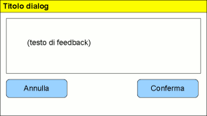

UI Panels - scheda del pannello [ DialogPanel]
DialogPanel]
In questa scheda è descritto il pannello DialogPanel, in termini di:
- riferimento alla documentazione di dettaglio dell'elemento del metamodello utilizzabile durante la modellazione
- uno o più snapshot che rappresentano graficamente il pannello
- una descrizione del pannello che ne descrive l'utilizzo e le possibili varianti
- elenco degli eventi gestibili (implicitamente o esplicitamente) relativamente al pannello
Identificativo e riferimenti di dettaglio
La documentazione metamodeldoc di dettaglio del pannello DialogPanel è disponibile
qui.
Descrizione
Il DialogPanel è un pannello utilizzato per realizzare funzioni di feedback utente
(messaggi informativi, dichieste di conferme). E'associato all'intera schermata e, quando è
attivato, mostra all'utente i messaggi previsti sostituendo completamente la schermata operativa.
All'interno del singolo tab è possibile inserire solo quelle tipologie di pannelli che servono per:
- mostrare messaggi formattati all'utente (MsgBoxPanel)
- fornire all'utente i comandi per "rispondere" al feedback, ovvero uno o più
pulsanti di conferma o cancellazione (CommandPanel)
Immagini esemplificative

fig.1 - esempio